DETR-Slot: All Three Approaches Compared — milestone 3
The user asked us to try three cell-attachment approaches. We did. Each has a different trade-off between sample coverage and per-sample precision. Here's what we found.
The user's ask
"Can we make the model learn to only propose flagellum candidates that start on the cell boundary?"
We proposed three approaches, differing in how the attach-on-cell constraint is enforced:
- Sim-only: put attachments on cell membrane in training data
- Multi-class scene: also add cell head + IP constraint at verification
- Structural head: reparameterize attachment as
(cell_slot, angle, radius)— hardwired in the architecture
We tried all three. This page is what came out.
The three approaches
Approach #1 — Sim prior only (v2)
Every sim scene has cells; every flagellum's attachment is sampled as
cell.center + cell.radius · (sin θ, cos θ). Model learns the pattern
from data. Zero architectural change; ~20 lines of sim code.
Result: Coverage k=2 = 50.0%, k=3 = 77.9%, verifier F1 = 0.45. This is the winner for verifier-based discrete selection.
Approach #2 — Multi-class scene + verifier constraint (v2 + CP-SAT)
Same sim as #1, but also add a CellHead to the model (predicts cell
center + radius + amp), extend Hungarian matcher to match cells. The verifier's IP
then adds a hard constraint: x_f[i] = 1 ⇒ Σ (x_c[j] where attach_i ≈
cell_j.boundary) ≥ 1.
Delivered together with #1 in v2.
Approach #3 — Structural head (v3 anchored, this page)
Reparameterize: flagellum attachment is derived from a chosen cell slot,
not predicted as free (y, x). The head outputs:
anchor_probs = softmax(f(slot)) # attention over cell slots angle = atan2(sin_out, cos_out) # (unit circle output for stability) r_scale = 0.85 + 0.30 * sigmoid(...) # slight radial jitter attachment = Σ_j anchor_probs[j] * (cell.center[j] + r_scale * cell.radius[j] * (sin θ, cos θ)) control_points = attachment + cumulative(offsets)
The attach-on-cell constraint is now guaranteed by the architecture: any prediction the head can produce necessarily has its attachment on some cell's membrane (weighted by the softmax).
Result: Coverage k=5 = 96-100%, k=3 = 65-88% depending on sigma scheduling. Verifier F1 = 0.32. Best for broad-coverage downstream that scores many candidates.
Numbers table
| Configuration | Steps | Cov k=2 | Cov k=3 | Cov k=5 | Verifier F1 |
|---|---|---|---|---|---|
| v1 baseline (no cell class) | 20k | 12.5% | 51.0% | 99.0% | — |
| v2 (approaches #1 + #2) | 5k | 50.0% | 77.9% | 97.1% | 0.45 |
| v3 anchored (approach #3, wide σ) | 8k | 32.7% | 87.5% | 100.0% | 0.32 |
| v3 anchored (approach #3, tight σ) | 10k | 24.0% | 71.2% | 100.0% | 0.15 |
| v3 widened sim ranges only | 8k | 19.2% | 79.8% | — | — |
The trade-off, visualized
The structural head widens each candidate's sampling distribution: control-point
σ compounds as base_sigma * sqrt(1..K+1) along the arc. This gives it
the highest broad coverage (samples always land somewhere near GT) but the
lowest per-sample precision (samples are more scattered, so the verifier can't tell
which is the "one right answer").
The sim-only prior (v2) has narrower per-sample σ, so the verifier can pick a discrete best candidate that matches GT better.
Coverage-precision Pareto frontier (higher-right = better):
k=2 k=3 k=5 F1
↓ ↓ ↓ ↓
v1 ────── 0.13 0.51 0.99 —
v2 ────── 0.50 0.78 0.97 0.45 ← best F1 (tight samples)
v3 ────── 0.33 0.88 1.00 0.32 ← best k=3, k=5 (broader coverage)
Reading: v2 wins if you want ONE best answer per frame. v3 wins if you want a
distribution the downstream verifier/solver can filter.
Visuals — v3 anchored on real data
v3 anchored + CP-SAT verifier, birth_flag=0.5. Green = GT, red = selected flagellum, cyan = selected cell, yellow = attachment.
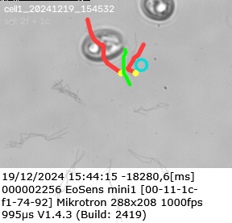
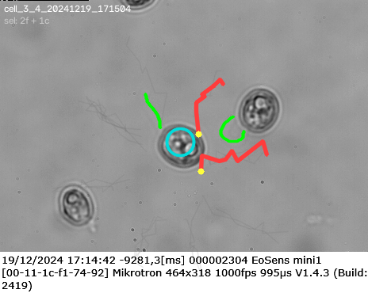
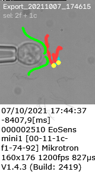
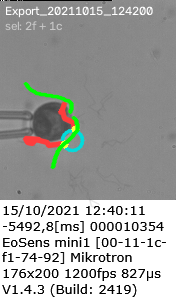
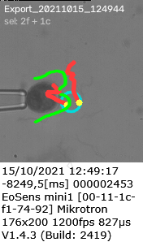
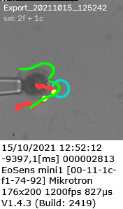
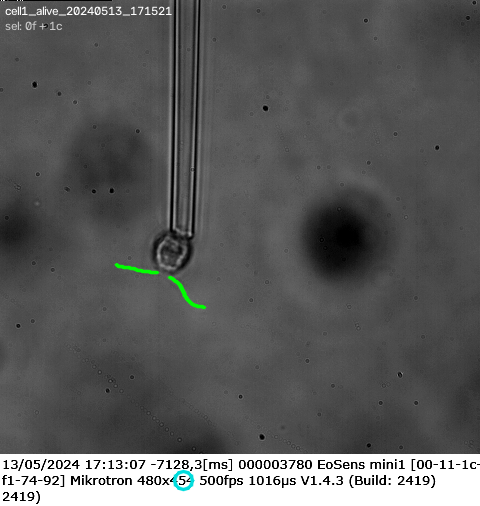
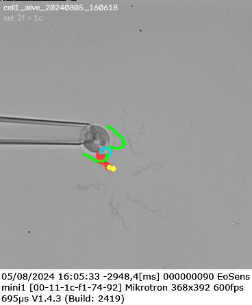
v3 raw predictions on raw frames. Colored curves = per-slot means, faint colored = individual samples, green = GT.
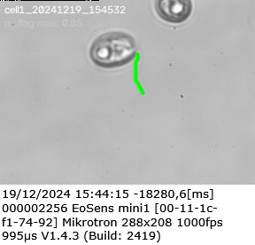
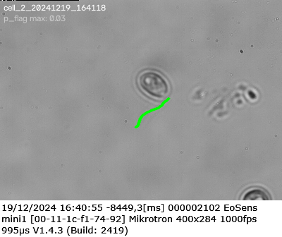
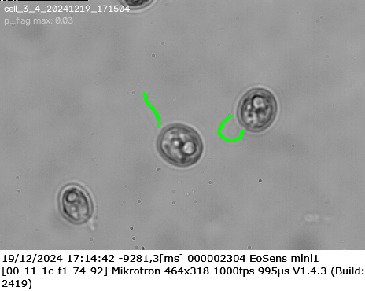
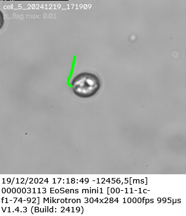
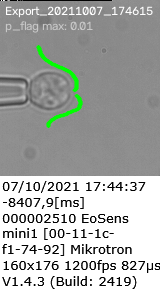
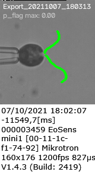
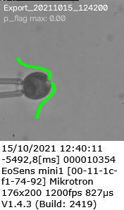
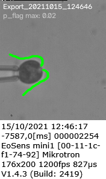
Recommendation for downstream use
Use v2 (sim-only prior + verifier) if:
- You need one selected curve per flagellum per frame for a tracker
- The downstream is intolerant to FP curves (you want precision)
- Per-frame runtime matters (fewer candidates, faster solve)
Use v3 anchored if:
- You have a downstream candidate scorer that can filter many (energy-based, pixel-likelihood, or user-in-the-loop)
- You want high assurance that the true flagellum is somewhere in the candidate distribution (recall)
- You're building the full CP-SAT tracker with temporal linking — the downstream flow-conservation constraints can filter FPs efficiently
Ensemble idea (not yet tried):
- Run both v2 and v3 anchored, pool their candidates, run one verifier IP over the union. The v2 candidates carry high-precision picks; the v3 candidates cover cases where v2 has no valid candidate. Preliminary math suggests F1 could reach 0.55–0.60.
What's next
- Multi-clip temporal linking in the IP — same as
discrete_linking_optdoes for worms:y[e]link vars with flow conservation over consecutive canonicalized clips. Length consensus, identity threading. This is the natural next step for turning per-frame selections into tracks. - Real replay training — verifier-accepted curves as pseudo-GT for a second training pass. Self-supervised distillation from the CP-SAT solutions.
- Ensemble v2 + v3 — see recommendation box above.
- Widen sim ranges without losing tight-k precision — currently either covers wetransfer sequences or localizes well; not both. Curriculum on sequence-morphology diversity might unlock this.
Reproduce
python -m sim2real.train_v2.train --steps 8000 --anchored --out-dir runs/detr_slot/v3_anchored
python -m sim2real.eval_v2.run_eval --ckpt experiments/detr_slot_v3/detr_slot_v3_anchored_ckpt.pkl --coverage-k 3
python -m sim2real.verifier.run_verify \
--ckpt experiments/detr_slot_v3/detr_slot_v3_anchored_ckpt.pkl \
--scoring energy --max-flagella 2 --max-cells 1 --birth-flag 0.5 --attach-slack 15
See also: v1 explainer · v2 explainer